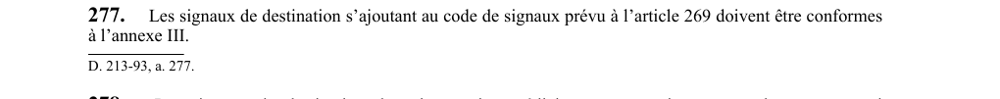

art-277-RSSM : signaux destination conformes annexe III
Un article du wiki ⚖️ Recueil législatif
En bref
Les signaux de destination s'ajoutant au code de signaux de l'article 269 doivent être conformes à l'annexe III. Il s'agit d'une obligation.
- Signaux s'ajoutant au code de l'article 269.
🌐 LegisQuébec · 📄 PDF officiel
Texte officiel : capture du PDF
{kind=link}

Toucher l'image pour l'agrandir🔗 Voir art. 277 RSSM dans le PDF (page 78)
Version : texte officiel du RSSM (RLRQ c. S-2.1, r. 14), à jour au 1er mai 2024 — Éditeur officiel du Québec
Voir aussi
- art. 275 : signal alarme 9 coups urgences · obligation : le signal d'alarme de 9 coups ne doit être utilisé qu'en cas d'accident, d'incendie, d'infiltration, d'inondation, d'effondrement ou d'événement semblable ; le signal de destination du niveau en danger doit suivre le signal d'alarme.
- art. 276 : non-interruption opération après signal exécution · interdiction : après avoir reçu un signal d'exécution et commencé l'opération demandée, l'opérateur de la machine d'extraction ne doit pas l'interrompre, à moins de recevoir un signal d'arrêt ou que l'opération ne mette en danger la santé et la sécurité des travailleurs.
- art. 278 : signaux niveaux intermédiaires et sous-niveaux · obligation : les signaux de destination des niveaux intermédiaires ou sous-niveaux doivent être déterminés en utilisant le signal de destination de la recette du niveau principal situé immédiatement au-dessus, suivi du signal correspondant au numéro attribué à chaque sous-niveau.
- art. 279 : numérotation indépendante niveaux par puits · obligation : la numérotation de chaque niveau doit être indépendante d'un puits à l'autre et le numéro attribué à chaque niveau doit correspondre à l'ordre qu'il occupe effectivement par rapport aux autres niveaux du même puits en partant de son orifice.
- ⚖️ Loi habilitante : LSST
- ↑ Index du bloc : Premiers secours et sauvetage
Pages qui pointent ici (5)
- art-275-RSSM : signal alarme 9 coups urgences Recueil législatif
- art-276-RSSM : non-interruption opération après signal exécution Recueil législatif
- art-278-RSSM : signaux niveaux intermédiaires et sous-niveaux Recueil législatif
- art-279-RSSM : numérotation indépendante niveaux par puits Recueil législatif
- RSSM : Premiers secours et sauvetage (art. 251 à 280) Recueil législatif